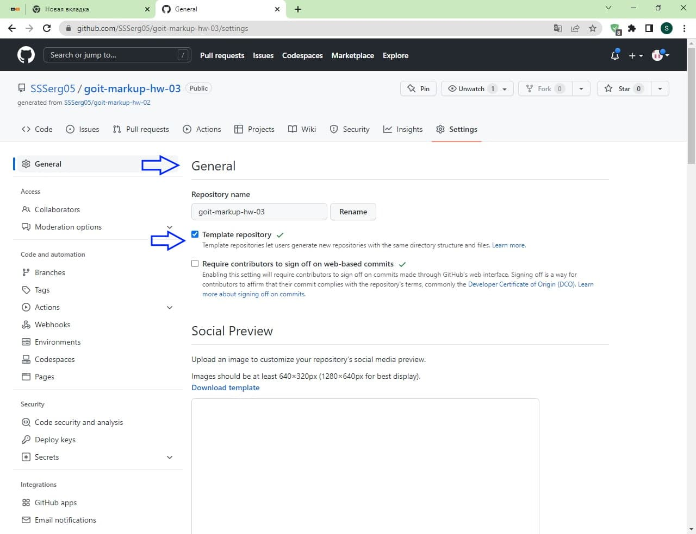

Створення нового репозиторію у GitHub
на базі іншого та клонування його
на робочю станцію
-

Відкриваємо GitHub Desktop та обераємо репозиторій, на основі якого потрібно створити новий репозиторій.
Натискаємо на кнопку Open in GitHub.
GitHub Desktop кращє закрити -

На сайті GitHub вибираємо пунк меню Settings
-
 Select On Template repository">
Активуємо галочку у пункті General -> Template repository
-
Створюємо новий репозиторій
-

Вибираємо у полі Template репозиторій на базі якого ми створюємо новий репозиторій.
Пишемо назву нашого нового репозиторію -

Відкриваємо GitHub Desktop.
File, Clone Repository -

Все. Репозиторій створено та скопійовано на робочу станцію.
Тискнемо на клавішу Open in Visual Studio Code і працюємо з новим репозиторієм